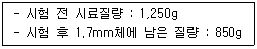
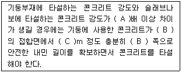
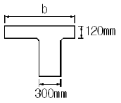
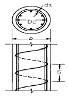
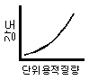
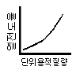
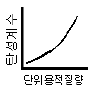
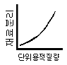
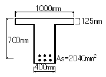
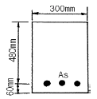

콘크리트기사 (2004-12-12 기출문제)
1과목: 재료 및 배합
1. 시멘트의 일반적 특성과 용도에 관한 다음 설명 중 틀린 것은?
- 조강포틀랜드시멘트는 초기 압축강도 발현이 커서 프리스트레스트콘크리트에 사용하고 있다.
- 중용열포틀랜드시멘트는 수화열이 보통포틀랜드시멘트와 조강포틀랜드시멘트의 중간정도로 한중콘크리트에 사용 하고 있다.
- 고로시멘트는 수화열 발열량이 적어 매스콘크리트 구조물에 사용하고 있다.
- 내황산염시멘트는 화학저항성이 우수하여 지하 구조물용에 사용하고 있다.
(정답률: 90%)

2. 콘크리트 배합시 슬럼프에 대한 다음 설명 중 올바르지 않은 것은?
- 슬럼프값이 너무 작으면 타설이 곤란하다.
- 슬럼프값은 진동기 사용 등 다짐방법에 의해서도 변하게 된다.
- 콘크리트의 운반시간이 길어지면 슬럼프값이 증가하는 경향이 있다.
- 슬럼프값은 타설장소에서의 값이 중요하다.
(정답률: 89%)
3. KS에 규정되어 있는 골재시험항목에 대하여 사용하는 용액이 잘못 연결된 것은?
- 안정성 - 황산나트륨
- 유기불순물 - 수산화나트륨
- 염화물함유량 - 질산나트륨
- 알칼리골재반응 - 수산화나트륨
(정답률: 52%)
4. 콘크리트 배합에서 시멘트의 사용량을 가급적 줄이려면 다음 중 어느 것을 고려해야 하는가?
- 골재의 입도
- 혼화재의 종류
- 콘크리트의 수축
- 콘크리트 중의 공기량
(정답률: 80%)
5. 아래표는 굵은골재의 마모시험 결과값이다. 마모율로서 옳은 것은?

- 마모율 : 68%
- 마모율 : 47%
- 마모율 : 53%
- 마모율 : 32%
(정답률: 46%)
6. 시멘트에 관한 설명 중 옳지 않은 것은?
- 시멘트가 풍화하면 탄산가스와 수분의 반응으로 인해 비중이 높아진다.
- 시멘트 분말의 비표면적을 크게 하면 강도의 발현이 빨라진다.
- 시멘트의 강도는 일반적으로 표준양생 재령 28일의 강도를 말한다.
- 시멘트 제조 시 첨가하는 석고의 양을 늘리면 응결속도가 지연된다.
(정답률: 70%)
7. 골재에 관련된 설명으로서 옳지 않은 것은?
- 골재의 밀도값으로 개략적인 골재품질의 판정이 가능하다.
- 골재의 단위용적질량 시험방법으로는 봉 다지기에 의한 방법과 충격에 의한 방법 등이 있다.
- 골재의 흡수량은 공기중 건조상태에서 표면건조포화 상태가 될때까지 흡수되는 수량이다.
- 부순골재 입형의 좋고 나쁨은 그 실적율의 크고 작음으로 판별가능하다.
(정답률: 75%)
8. 콘크리트용 화학혼화제의 작용과 효과에 관한 다음 설명중 적당하지 않은 것은?
- AE제는 미세한 기포를 다수 연행하여 콘크리트의 워커빌리티를 개선하는 효과가 있다.
- 감수제는 시멘트 입자를 정전기적인 반발작용으로 분산시켜 콘크리트의 단위수량을 감소시키는 효과가 있다.
- AE감수제는 시멘트 분산작용 이외에 공기연행작용을 함께 가지고 있어 콘크리트의 동결융해 저항성을 높여 주는 효과가 있다.
- 고성능 AE감수제는 시멘트의 분산작용을 분명하게 하여 콘크리트의 응결을 빠르게 하는 효과가 있다.
(정답률: 69%)
9. 시멘트 시험중 풍화도와 가장 관계가 없는 시험은?
- 비중
- 분말도
- 강열감량
- 불용해잔분
(정답률: 80%)
10. 레미콘공장 회수수를 혼합수로 사용하는 경우의 유의사항에 관한 다음 설명 중 적당하지 않은 것은?
- 슬러지 고형분은 시멘트 질량의 3%이하로 한다.
- 슬러지 고형분이 많은 경우에는 단위수량을 증가시킨다.
- 슬러지 고형분이 많은 경우에는 잔골재율을 증가시킨다.
- 슬러지 고형분이 많은 경우에는 AE제의 사용량을 증가시킨다.
(정답률: 81%)
11. 콘크리트에 대한 다음 설명 중에서 가장 적절한 것은?
- 콘크리트의 동결융해 저항성을 향상시키는 것은 AE콘크리트로 제조하는 경우와 물-시멘트비를 작게 하여 밀실한 콘크리트로 제조하는 경우가 있으나 그 개선효과는 AE 콘크리트로 제조하는 것이 더욱 효과적이다.
- 경화시멘트 페이스트는 다공질 재료로서 흡수성이 높으므로 콘크리트 내동해성은 주로 시멘트 페이스트의 품질에 의해 지배되고 골재의 품질에 의한 영향은 없다.
- 햇빛을 받지 않는 북쪽 면의 콘크리트는 햇빛을 받는 남쪽 면의 콘크리트에 비해 저온이므로 일반적으로 현저한 동해를 일으킨다.
- 콘크리트의 동해 정도는 동결융해 반복횟수에 지배되므로 동결시 최저온도의 영향은 적다.
(정답률: 48%)
12. 다음에 설명하는 골재중 콘크리트용 잔골재로 적합한 것은?
- 잔골재에는 굵은 입자와 가는 입자가 고르게 혼합되어 있는 것
- 조립률이 3.3∼4.1 범위의 잔골재
- 모래의 흡수율이 3.0%이상인 것
- 염화물 이온량의 질량 백분율이 0.2∼0.03%인 하천 모래
(정답률: 75%)
13. 물-시멘트비 50%, 잔골재율 43.0%, 공기량 5.0% 및 단위수량 170kg/m3의 조건으로 한 콘크리트의 시방배합결과에 대한 설명중 틀린 것은? (단, 시멘트 비중 : 3.15, 잔골재 표면건조 포화상태 비중 : 2.57, 굵은골재 표면건조 포화상태 비중 2.65)
- 단위시멘트량은 340kg/m3이다.
- 골재의 절대용적은 672ℓ/m3이다.
- 단위잔골재량은 798kg/m3이다.
- 단위굵은골재량은 1,015kg/m3이다.
(정답률: 68%)
14. 골재 실험 결과 골재의 단위용적질량이 1,700kg/m3, 골재의 절건 밀도가 2.65g/cm3일 때 이 골재의 공극률은?
- 35.85%
- 64.15%
- 57.26%
- 42.74%
(정답률: 62%)
15. 보통 포틀랜드 시멘트의 응결에 대한 다음 설명 중 적절하지 않은 것은?
- 온도가 높으면 응결은 빨라진다.
- 분말도가 높을수록 응결은 빨라진다.
- 배합수가 많을수록 응결은 빨라진다.
- 시멘트의 응결은 Vicat 침장치에 의하여 측정한다.
(정답률: 84%)
16. 플라이 애쉬를 사용한 콘크리트의 성질로 옳은 것은?
- 유동성의 저하
- 장기강도의 저하
- 수화열의 감소
- 알카리 골재 반응의 촉진
(정답률: 72%)
17. 콘크리트용 플라이 애쉬로 사용할 수 없는 것은?
- 이산화규소의 함유량이 48%인 경우
- 강열감량이 6%인 경우
- 밀도가 2.2인 경우
- 압축강도비가 65%인 경우
(정답률: 71%)
18. 콘크리트의 배합설계에서의 물-시멘트비에 대한 다음 설명중 올바르지 않은 것은 ?
- 제빙화학제가 사용되는 콘크리트의 물-시멘트비는 45%이하로 한다.
- 중성화 저항성을 고려하는 경우 물-시멘트비는 55%이하로 한다.
- 황산염 노출정도가 보통인 경우 최대 물-시멘트비는 50%로 한다.
- 기상작용이 심하며 물에 잠겨있는 얇은 단면의 경우 최대 물-시멘트비는 55%로 한다.
(정답률: 70%)
19. 콘크리트 배합수정 방법으로 가장 옳지 않은 것은?
- 슬럼프값이 클수록 잔골재율을 증가시킨다.
- 공기량이 낮을수록 잔골재율을 증가시킨다.
- 물-시멘트비가 클수록 잔골재율을 증가시킨다.
- 모래의 조립율이 작을수록 잔골재율을 감소시킨다.
(정답률: 53%)
20. 다음 중 실리카퓸을 혼합한 콘크리트 성질중 틀린 것은?
- 실리카퓸을 혼합한 콘크리트의 목표 슬럼프를 유지하기 위해 소요되는 단위수량은 혼합량이 증가함에 따라 거의 선형적으로 증가한다.
- 실리카퓸은 비표면적이 작고 미연소 탄소를 함유하지 않기 때문에 목표 공기량을 유지하기 위해 혼합률이 증가함에 따라 AE제의 사용량을 증가시킬 필요가 없다.
- 물-결합재비를 낮추기 위하여 고성능 감수제의 사용은 필수적이다.
- 실리카퓸을 혼합하면 블리딩과 재료분리를 감소시킬 수 있다.
(정답률: 70%)
2과목: 제조, 시험 및 품질관리
21. 콘크리트의 건조수축에 관한 설명으로 틀린 것은?
- 플라이 애쉬를 혼입한 경우는 일반적으로 건조수축이 감소한다.
- 건조 수축의 주원인은 콘크리트가 수화 작용을 하고 남은 물이 증발하기 때문이다.
- 콘크리트의 단위 수량이 많은 콘크리트일수록 건조수축이 작게 일어난다.
- 염화칼슘을 혼입한 경우는 일반적으로 건조수축을 증대시킨다.
(정답률: 55%)
22. 콘크리트 압축강도 시험방법에 관한 설명 중 틀린 것은?
- 공시체의 상하 끝면 및 상하의 가압판의 압축면을 청소 해야 한다.
- 공시체를 공시체 지름의 1%이내의 오차에서 그 중심축이 가압판의 중심과 일치하도록 놓는다.
- 시험기의 가압판과 공시체의 끝면은 직접 밀착시키고 그사이에 쿠션재를 넣는다.
- 공시체가 급격한 변형을 시작한 후에는 하중을 가하는 속도의 조정을 중지하고 하중을 계속 가하여야 한다.
(정답률: 42%)
23. 굳은 콘크리트가 대기 중의 무엇과 반응하여 중성화를 일으키는가?
- 질소
- 산소
- 이산화탄소
- 물분자
(정답률: 50%)
24. 단위시멘트량과 단위수량이 각각 300 kg/m3, 160 kg/m3이고 물-결합재비가 0.4라면 혼화재 사용량은 얼마인가?
- 80 kg/m3
- 100 kg/m3
- 120 kg/m3
- 150 kg/m3
(정답률: 45%)
25. 굳지 않은 콘크리트의 워커빌리티에 영향을 미치는 요인에 대한 설명 중 옳지 않는 것은?
- 시멘트량이 많을수록 콘크리트는 워커블하게 된다.
- 모난 골재를 사용하면 워커빌리티가 좋아진다.
- AE제, 플라이애쉬를 사용하면 워커빌리티가 개선된다.
- 콘크리트의 온도가 높을수록 슬럼프는 감소된다.
(정답률: 75%)
26. 레디믹스트 콘크리트의 품질에 관한 설명 중 옳지 않은 것은?
- 슬럼프가 80 mm 이상인 경우 슬럼프 허용차는 ±20mm이다.
- 보통콘크리트의 경우 공기량은 4.5%로 하며, 그 허용오차는 ±1.5%로 한다.
- 1회의 강도시험결과는 호칭강도의 85% 이상이고 3회의 시험결과의 평균치는 호칭강도의 값 이상이어야 한다.
- 염화물 함유량의 한도는 배출지점에서 염화물이온량으로 0.30 kg/m3 이하로 하여야 한다.
(정답률: 50%)
27. 콘크리트 타설검사 항목이 아닌 것은?
- 타설설비 및 인원배치
- 타설방법
- 타설량
- 콘크리트 타설온도
(정답률: 50%)
28. 최근 고유동 콘크리트의 컨시스턴시를 평가하기 위한 시험법 중 가장 적당하지 않은 것은?
- 유하시험
- 비비시험
- L형 플로시험
- 슬럼프 플로시험
(정답률: 53%)
29. 레디믹스트 콘크리트 공장에서 공정관리를 위한 잔골재시험중 시험의 빈도가 가장 높아야 하는 것은?
- 표면수율 시험
- 체가름 시험
- 비중 및 흡수율 시험
- 염화물함량 시험
(정답률: 55%)
30. 콘크리트 공시체 제작시 압축강도용 공시체는 ø150×300mm를 기준으로 하고 있다. 이때 ø100×200mm의 공시체를 사용할 경우 강도 보정계수는 얼마인가?
- 0.80
- 0.85
- 0.90
- 0.97
(정답률: 48%)
31. 품질관리에 이용되는 관리도의 종류에서 계수치 관리도가 아닌 것은?
- P(불량율)관리도
- C(결점수)관리도
- x(평균치)관리도
- U(단위당 결점수)관리도
(정답률: 58%)
32. 블리딩이 일어날 수 있는 가장 큰 조건은?
- 슬럼프가 작을 때
- 단위수량이 클 때
- 잔골재가 많을 때
- 배합강도가 낮을 때
(정답률: 60%)
33. 콘크리트의 제조시 사용하는 골재로 인해 알카리 골재반응이 발생할 수 있는데, 알카리 골재반응의 억제대책으로 적당하지 않은 것은?
- 저알카리 시멘트를 사용한다.
- 혼합 시멘트를 사용하는 것이 좋다.
- 콘크리트의 알카리 총량을 규제한다.
- 시멘트의 성분 중 나트륨(Na) 이온이 많은 것이 좋다.
(정답률: 71%)
34. 설계기준강도와 압축강도의 표준편차가 각각 27 MPa과 3.0MPa인 경우 콘크리트의 배합강도는 얼마인가?
- 30.0 MPa
- 30.5 MPa
- 31.0 MPa
- 31.5 MPa
(정답률: 58%)
35. 혼화재료 중 고로슬래그 미분말의 사용목적으로 가장 적절치 않은 것은?
- 염분차폐성 및 수밀성 향상
- 알카리 골재반응 억제
- 중성화 억제
- 장기강도 향상
(정답률: 57%)
36. 매스 콘크리트의 온도 균열 방지대책으로 틀린 것은?
- 혼화재료는 가급적 피하는 것이 좋다.
- 균열제어철근을 배근하여 변형을 구속한다.
- 유동화 콘크리트 공법을 도입한다.
- 발열량이 적은 시멘트를 사용하고, 단위 시멘트량을 줄인다.
(정답률: 79%)
37. 지름 150mm, 높이 300mm의 원주형 공시체를 사용하여 인장강도 시험을 한 결과 최대하중이 250kN이라면 이 콘크리트의 인장강도는?
- 2.12 MPa
- 2.53 MPa
- 3.22 MPa
- 3.54 MPa
(정답률: 57%)
38. 압력법에 의한 공기량 시험법에서 최대골재크기는?
- 75㎜
- 40㎜
- 30㎜
- 25㎜
(정답률: 78%)
39. 관입저항침에 의한 콘크리트의 응결시간 측정 시 종결시간으로 정의하는 관입저항값은 얼마인가?
- 20 MPa
- 25 MPa
- 28 MPa
- 30 MPa
(정답률: 64%)
40. 콘크리트의 크리프에 관한 아래의 설명중 틀린 것은?
- 재하기간중의 대기의 습도가 높을수록 크리프가 크다
- 시멘트량이 많을수록 크리프가 크다
- 재하시의 재령이 작을수록 크리프가 크다
- 보통시멘트는 조강시멘트에 비하여 크리프가 크다
(정답률: 60%)
3과목: 콘크리트의 시공
41. 수밀콘크리트의 시공에 대한 방법으로 옳지 않은 것은?
- 적절한 간격으로 시공이음을 만들었다.
- 일반적인 경우보다 잔골재율을 작게 하였다.
- 타설구획 내에서 연속으로 타설하였다.
- 연직시공이음에는 지수판을 설치하였다.
(정답률: 55%)
42. 매스콘크리트에서 균열발생을 방지하여야 할 경우의 온도균열지수의 범위는?
- 0.7이상 1.0미만
- 1.0이상 1.2미만
- 1.2이상 1.5미만
- 1.5이상
(정답률: 64%)
43. 다음은 구조물별 시공이음의 위치에 대한 설명이다. 옳지 않은 것은?
- 보의 지간 중앙부에 작은 보가 지날 경우는 작은 보폭의 2배정도 떨어진 곳에 시공이음을 설치한다.
- 아치의 시공이음은 아치축에 직각방향이 되도록 설치한다.
- 바닥틀의 시공이음은 슬래브 또는 보의 경간 단부에 둔다.
- 바닥틀과 일체로 된 기둥 혹은 벽의 시공이음은 바닥틀과의 경계부근에 설치하는 것이 좋다.
(정답률: 56%)
44. 한중콘크리트에 관한 설명으로 옳지 않은 것은?
- 하루의 평균기온이 4℃ 이하가 되는 기상조건하에서는 한중콘크리트로서 시공한다.
- 콘크리트를 비비기 할 때 재료를 가열할 경우, 물 또는 골재를 가열하는 것으로 하며, 시멘트는 어떠한 경우라도 직접 가열해서는 안 된다.
- 가열할 재료를 믹서에 투입할 때 가열한 물과 굵은골재, 다음에 잔골재를 넣어서 믹서 안의 재료온도가 40℃이하가 된 후 최후에 시멘트를 넣는 것이 좋다.
- 기상조건이 가혹한 경우 소요의 압축강도가 얻어질 때까지 콘크리트의 양생온도는 5℃ 이상을 유지하여야 한다.
(정답률: 37%)
45. 숏크리트의 건식법에 대한 설명으로 잘못된 것은?
- 일반적인 압송거리는 습식법에 비하여 장거리 수송이 적당하지 못하며 100m정도에 한정되어 사용된다.
- 시공 도중에 분진발생이 많고 골재가 튀어나오는 등의 단점이 있다.
- 습식법에 비하여 작업원의 능력과 숙련도에 따라 품질이 크게 좌우된다.
- 건식법은 시멘트와 골재를 건비빔(dry mix)시켜서 노즐까지 보내어 여기서 물과 합류시키는 공법이다.
(정답률: 63%)
46. 해양콘크리트 제조에 사용되는 혼화재료 중 수밀성이 높고 해수의 화학작용에 대한 내구성을 크게하기 위하여 사용되는 것은?
- 플라이애쉬
- 유동화제
- AE제
- 폴리머
(정답률: 57%)
47. 고강도콘크리트에 관한 다음 설명 중 틀린 것은?
- 콘크리트를 타설한 후 경화할 때까지 직사광선이나 바람에 의해 수분이 증발하지 않도록 하여야 한다.
- 콘크리트의 운반시간 및 거리가 긴 경우에는 고성능 감수제 등을 추가로 투여하는 등의 조치를 하여야한다.
- 믹서에 재료를 투입할 때 고성능 감수제는 혼합수와 동시에 투여하여서는 안된다.
- 고강도콘크리트의 설계기준강도는 일반적으로 35MPa 이상으로 한다.
(정답률: 70%)
48. 전단력이 큰 위치에 시공이음을 설치하는 경우 전단력에 대한 보강방법으로 적절하지 않은 것은?
- 장부(요철)를 만드는 방법
- 홈을 만드는 방법
- 철근으로 보강하는 방법
- 합성섬유에 의한 하면 접착보강 방법
(정답률: 53%)
49. 다음은 일반 콘크리트 타설에 대한 내용이다. 콘크리트 시방서의 기준에 적합한 방법으로 시공한 것은?
- 호퍼 등의 배출구와 타설면까지의 높이를 2m로 한다.
- 벽을 타설할 때 1시간에 4m를 연속 타설한다.
- 외기온 30℃일 때, 1.5시간 내에 이어치기를 한다.
- 표면의 블리딩수를 제거하기 위해 표면에 홈을 만든다.
(정답률: 56%)
50. 고강도콘크리트의 타설에 대해 아래 표의 ( )안에 들어갈 적절한 수치 또는 용어는?

- A : 1.0, B : 수평부재, C : 0.4
- A : 1.0, B : 수직부재, C : 0.6
- A : 1.4, B : 수평부재, C : 0.6
- A : 1.4, B : 수직부재, C : 0.4
(정답률: 55%)
51. 수중 콘크리트의 타설 공정에 대한 다음의 서술 중 옳지 않은 것은?
- 콘크리트는 밑열림상자나 밑열림포대를 사용하는 것을 원칙으로 한다.
- 콘크리트는 정수중에 타설하는 것을 원칙으로 한다.
- 콘크리트는 수중에 낙하시켜서는 안된다.
- 콘크리트가 경화될 때까지 물의 유동을 방지해야 한다.
(정답률: 57%)
52. 숏크리트 작업시, 갱내환기를 정지한 환경에서 뿜어붙이기 작업개소로부터 5m지점의 분진농도의 표준값은?
- 2mg/m3 이하
- 3mg/m3 이하
- 4mg/m3 이하
- 5mg/m3 이하
(정답률: 58%)
53. 콘크리트 부재의 표면에 발생하는 기포에 대한 다음의 기술 내용 중 잘못된 것은?
- 단위 시멘트량이 증가하면 콘크리트 부재 표면의 기포는 감소하는 경향이 있다.
- 경사면의 윗면은 수직면의 경우보다 더 많은 기포가 발생하는 경향이 있다.
- 거푸집 표면 부근의 진동 다짐은 부재 표면의 기포를 증가시킬 수도 있다.
- 목재 거푸집의 경우 거푸집이 건조하면 기포가 감소하고, 강재 거푸집의 경우 온도가 높으면(여름철) 기포가 감소하는 경향이 있다.
(정답률: 58%)
54. 시공이음시 철근으로 보강하는 경우 정착길이는 최소 얼마 이상의 길이로 해야 하는가?
- 철근지름의 10배 이상
- 철근지름의 15배 이상
- 철근지름의 20배 이상
- 철근지름의 25배 이상
(정답률: 55%)
55. 프리팩트 콘크리트에 대한 다음의 서술 중 적절하지 않은 것은?
- 프리팩트콘크리트의 강도는 원칙적으로 재령 28일 또는 재령 91일에서의 압축강도를 기준으로 한다.
- 대규모 프리팩트콘크리트를 적용할 경우 굵은골재의 최소치수는 40mm 정도 이상으로 한다.
- 믹서에 재료투입은 물, 플라이 애쉬, 혼화제, 잔골재, 시멘트의 순으로 한다.
- 모르타르 주입관의 간격은 굵은 골재의 치수, 배합 및 유동성, 주입속도에 따라 적절히 결정된다.
(정답률: 56%)
56. 콘크리트 타설 후 양생에 관한 주의사항에 대한 설명으로 틀린 것은?
- 일평균기온이 15℃이상이고 보통포틀랜드시멘트를 사용한 콘크리트의 경우 습윤양생기간은 5일을 표준으로 한다.
- 막 양생제는 콘크리트 표면의 물빛(水光)이 없어진 직후에 살포하며, 방향을 바꾸어 2회이상 실시한다.
- 부재의 크기 또는 온도상승이 큰 경우 파이프쿨링이나 표면보온을 병용한 온도제어 양생을 실시한다.
- 플라이애쉬를 사용한 경우 온도에 민감하므로 저온시에도 보통포틀랜드 시멘트보다 양생기간을 짧게한다.
(정답률: 70%)
57. 먼저 타설된 콘크리트와 나중에 타설되는 콘크리트 사이에 완전히 일체화가 되지 않은 이음부는?
- 콜드조인트
- 균열유발줄눈
- 신축이음
- 수축이음
(정답률: 74%)
58. 숏크리트 작업 사항으로 틀린 것은?
- 리바운드량이 최대가 되도록 하여 리바운드된 재료가 다시 혼입되도록 한다.
- 뿜어붙인 콘크리트가 소정의 두께가 될 때까지 반복해서 뿜어붙인다.
- 강재지보공을 설치한 곳에서는 숏크리트와 강재지보공이 일체가 되도록 한다.
- 노즐은 항상 뿜어붙일 면에 직각이 되도록 유지하고 적절한 뿜는 압력을 유지하여야 한다.
(정답률: 74%)
59. 경량골재 콘크리트의 재료 및 시공에 관한 설명으로 틀린것은?
- 슬럼프는 일반적으로 50~180mm를 표준으로 한다.
- 공기량은 보통골재를 사용한 콘크리트보다 1% 크게 한다.
- 경량골재 콘크리트는 AE콘크리트를 원칙으로 한다.
- 가경식 믹서를 사용할 때 비비는 시간의 표준은 1분 이상으로 한다.
(정답률: 55%)
60. 콘크리트를 덤프트럭으로 운반할 수 있는 조건으로 적절한 것은?
- 슬럼프 25mm 이하의 된반죽 콘크리트를 10km 이하거리 또는 2시간이내 운반가능한 경우
- 슬럼프 50mm 이하의 된반죽 콘크리트를 20km 이하거리 또는 2시간이내 운반가능한 경우
- 슬럼프 25mm 이하의 된반죽 콘크리트를 20km 이하거리 또는 1시간이내 운반가능한 경우
- 슬럼프 50mm 이하의 된반죽 콘크리트를 10km 이하거리 또는 1시간이내 운반가능한 경우
(정답률: 57%)
4과목: 구조 및 유지관리
61. 직접 설계법에 의한 슬래브 설계에서 전체 정적계수휨모멘트 Mo = 300kN·m로 계산 됐을 때 내부 경간의 부계수휨모멘트는 얼마인가?
- 150kN·m
- 165kN·m
- 180kN·m
- 195kN·m
(정답률: 53%)
62. 다음 그림과 같이 경간 L=12m인 비대칭 T형보의 유효폭 b는 얼마인가? (단, 인접보와의 내측거리 = 1,400mm)

- 980 mm
- 1,000 mm
- 1,020 mm
- 1,300 mm
(정답률: 52%)
63. 지름이 400mm인 원형나선 철근기둥이 그림과 같이 축방향 철근 6-D25이며, 나선철근 D13이 50mm 피치로 둘러싸여 있다. fck=35 MPa, fy=400 MPa일 때, 길이가 짧은 단주기둥의 최대 설계축하중강도( øPn )을 구하면? (단, D25 철근 1개의 단면적은 506.7 mm2)

- 3,101 kN
- 3,648 kN
- 3,891 kN
- 4,864 kN
(정답률: 43%)
64. 콘크리트의 단위 용적 질량과 재료적 특성 경향이 틀린 것은?




(정답률: 55%)
65. 콘크리트를 각종 섬유로 보강하여 보수공사를 진행할 경우 섬유가 갖추어야 할 조건으로 거리가 먼 것은?
- 섬유의 압축 및 인장강도가 충분해야 한다.
- 섬유와 시멘트 결합재와의 부착이 우수해야 한다.
- 시공이 어렵지 않고 가격이 저렴해야 한다,
- 내구성, 내열성, 내후성 등이 우수해야 한다.
(정답률: 69%)
66. 1방향 철근 콘크리트 슬래브의 최소 수축온도 철근량은? (fck=21MPa, fy=300MPa, b=1,000㎜, d=250㎜)
- 250㎜2
- 500㎜2
- 750㎜2
- 1,000㎜2
(정답률: 58%)
67. 단철근 직사각형 보에서 fy=300MPa, fck=50MPa 일 때 강도설계법에 의한 균형 철근비를 구한 값 중 옳은 것은?
- 0.045
- 0.⑤4
- 0.066
- 0.080
(정답률: 50%)
68. 종합적인 해석을 하지 않는 경우 일반 콘크리트 휨 부재의 장기처짐은 해당 지속 하중에 의한 순간 처짐에 대하여 최대 몇 배로 할 수 있는가?
- 1.5배
- 2.0배
- 2.5배
- 3.0배
(정답률: 48%)
69. 그림과 같은 T형 단면의 보에서 콘크리트의 설계기준강도와 철근의 항복강도는 각각 24 MPa와 300 MPa이다. 공칭모멘트 강도(Mn)는 얼마인가?

- 331.7 kN·m
- 356.3 kN·m
- 390.2 kN·m
- 419.2 kN·m
(정답률: 34%)
70. D25(공칭지름 25.4mm) 철근을 90°표준갈고리로 제작할 때 90° 구부린 끝에서 연장되는 길이는 최소 얼마인가?
- 355㎜
- 330㎜
- 3⑤㎜
- 280㎜
(정답률: 53%)
71. 콘크리트 구조물의 재하 시험에서 하중을 받을 수 있는 구조 부분의 최소한의 재령은 얼마인가?
- 14일
- 28일
- 56일
- 84일
(정답률: 59%)
72. 피복두께가 100mm이하이고 건조 환경에 있는 철근콘크리트건물의 허용 균열 폭은 최대 얼마인가?
- 0.4㎜
- 0.3㎜
- 0.2㎜
- 0.15㎜
(정답률: 46%)
73. 그림과 같은 As = 3-D29 = 1,927 mm2 로 보강된 단철근 직사각형 보가 과적하중에 의해서 파괴될 때, 어떠한 형태로 파괴되는가? (단, fck = 21 MPa , fy = 300 MPa)

- 균형파괴
- 연성파괴
- 취성파괴
- 일정하지 않다.
(정답률: 57%)
74. 콘크리트를 진단할 때 물리적 성질을 알아보기 위해 시행 하는 시험이 아닌 것은?
- 코아추출시험
- 알카리 골재반응시험
- 반발경도시험
- 투수성시험
(정답률: 45%)
75. 해석적 방법으로 구조물의 내하력을 평가하는 경우 구조부재의 치수는 어느 곳에서 확인해야 하는가?
- 위험 단면
- 부재 치수가 가장 작은 부분
- 부재 치수가 가장 큰 부분
- 균열이나 손상이 생긴 부분
(정답률: 72%)
76. 비교적 큰 단면을 갖는 지중(地中) 보나 지하 외벽 등의 부배합 콘크리트에서 발생하기 쉬운 균열의 주요 원인은 다음 중 무엇인가?
- 콘크리트의 침하
- 콘크리트의 블리딩
- 시멘트의 수화열
- 시멘트의 풍화
(정답률: 58%)
77. 발생된 손상이 안전성에 심각한 영향을 주지 않는다고 판단하면 보수 조치를 시행하는데, 다음의 조치중 보수에 해당하는 것은?
- 보강섬유 접착공법
- 강판접착 공법
- 주입공법
- 외부케이블 공법
(정답률: 53%)
78. 단면 복구재로서 폴리머 시멘트계 재료가 일반 콘크리트재료보다 우수하지 않은 것은?
- 염분 차단성
- 내화·내열성
- 부착성
- 가스 투과성
(정답률: 60%)
79. 내하력에 관해 의문시되는 기존구조물의 강도평가 내용 중 틀린 것은?
- 구조물 또는 부재의 안전이 의문시되는 경우, 해당 구조물의 책임기술자는 구조물의 안전도 및 내하력의 조사를 시행하도록 조치하여야 한다.
- 강도 부족에 대한 요인을 잘 알 수 있거나 해석에서 요구되는 부재 크기 및 단면의 특성을 측정할 수 있다면 해석적 평가가 가능하다.
- 강도부족에 대한 원인을 알 수 없거나 해석적 평가가 불가능 할 경우, 재하시험을 실시하여야 한다.
- 구조물이나 부재의 안전도에 대한 우려가 있으면, 재하 시험에 의해 모든 응답이 허용규정을 만족해도 구조물을 사용해서는 안된다.
(정답률: 64%)
80. 콘크리트 공장제품의 장점에 해당되지 않는 것은?
- 조립구조에 주로 사용되므로 공사기간이 단축된다.
- 현장에서 거푸집이나 동바리 등의 준비가 필요 없다.
- 규격품을 제조하므로 숙련공을 필요로 하지 않는다.
- 기후상황에 좌우되지 않고 시공을 할 수 있다.
(정답률: 69%)